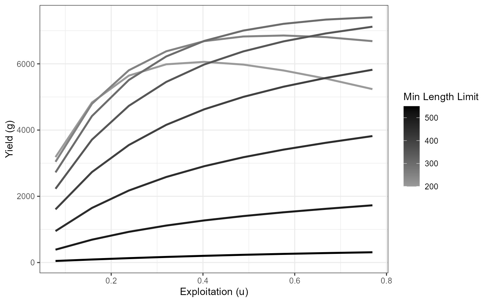
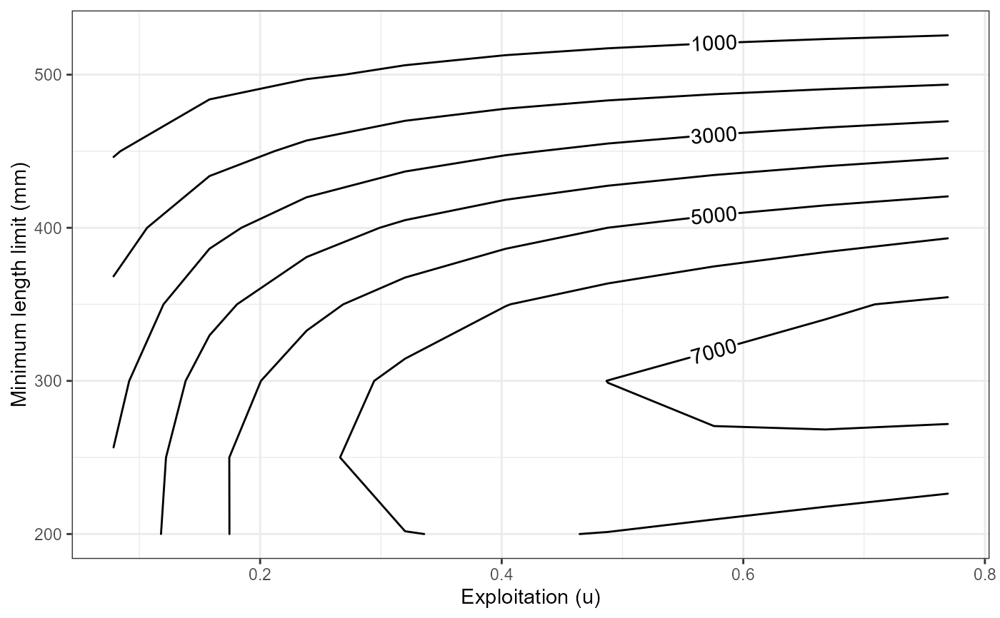
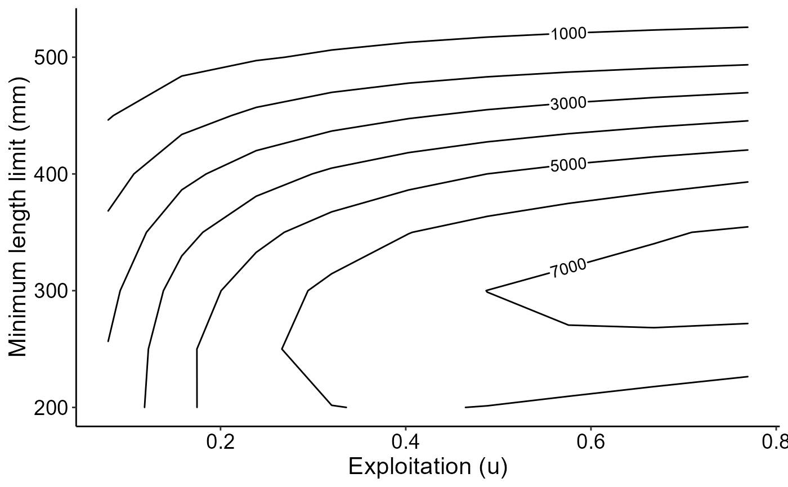
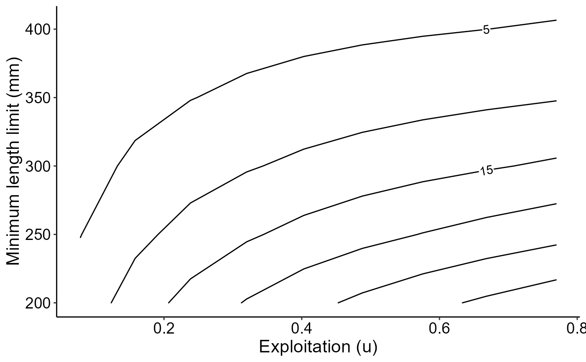

Main function to simulate expected yield using the Beverton-Holt Yield-per-Recruit model for a range of input parameters, including minimum length limits for harvest
Source:R/yprBH_MinLL_var.R
yprBH_minLL_var.RdEstimate yield using the Beverton-Holt Yield-per-Recruit (YPR) model using ranges of values for conditional fishing mortality (cf), conditional natural mortality (cm), and minimum length limits for harvest (minLL).
Usage
yprBH_minLL_var(
lengthmin,
lengthmax,
lengthinc,
cfmin,
cfmax,
cfinc,
cmmin,
cmmax,
cminc,
loi = NA,
lhparms,
matchRicker = FALSE
)Arguments
- lengthmin
A single numeric for the lower limit of minimum length limit for harvest in mm.
- lengthmax
A single numeric for the upper limit of minimum length limit for harvest in mm.
- lengthinc
A single numeric for the increment to cycle from lower to upper minimum length limit for harvest in mm.
- cfmin
A single numeric for minimum conditional fishing mortality.
- cfmax
A single numeric for maximum conditional fishing mortality.
- cfinc
A single numeric for increment to cycle from minimum to maximum conditional fishing mortality.
- cmmin
A single numeric for minimum conditional natural mortality.
- cmmax
A single numeric for maximum conditional natural mortality.
- cminc
A single numeric for increment to cycle from minimum to maximum conditional natural mortality.
- loi
A numeric vector for lengths of interest. Used to determine number of fish that reach desired lengths.
- lhparms
A named vector or list that contains values for each
N0,tmax,Linf,K,t0,LWalpha, andLWbeta. SeemakeLHfor definitions of these life history parameters. Also see details.- matchRicker
A logical that indicates whether the yield function should match that in Ricker (). Defaults to
TRUE. The only reason to changed toFALSEis to try to match output from FAMS. See the "YPR_FAMSvRICKER" article.
Value
A data.frame with the following calculated values:
yieldis the estimated yield (in g).exploitationis the exploitation rate.Nharvestis the number of harvested fish.Ndieis the number of fish that die of natural deaths.Ntis the number of fish at time tr (time they become harvestable size).avgwtis the average weight of fish harvested.avglenis the average length of fish harvested.tris the time for a fish to recruit to a minimum length limit (i.e., time to enter fishery).Fis the instantaneous rate of fishing mortality.Mis the instantaneous rate of natural mortality.Zis the instantaneous rate of total mortality.Sis the (total) annual rate of survival.N at xxx mmis the number that reach the length of interest supplied. There will be one column for each length of interest.
For convenience the data.frame also contains the model input values (minLL derived from lengthmin, lengthmax, and lengthinc; cf derived from cfmin, cfmax, and cfinc; cm derived from cmmin, cmmax, and cminc; N0; Linf; K; t0; LWalpha; LWbeta; and tmax).
The data.frame also contains a notes value which may contain abbreviations for "issues" that occurred when computing the results and were adjusted for. The possible abbreviates are defined under "values" in the documentation for yprBH_func.
See also
yprBH_func for estimating yield from single values of cf, cm, and minLL, and yprBH_minLL_fixed for simulating yield with multiple values of cf and cm but a fixed value for minLL.
Author
Jason C. Doll, jason.doll@fmarion.edu
Examples
# Life history parameters to be used below
LH <- makeLH(N0=100,tmax=15,Linf=592,K=0.20,t0=-0.3,LWalpha=-5.528,LWbeta=3.273)
# Estimate yield for multiple values of minLL, cf, and cm
# # This is a minimal example, lengthinc, cfinc, cminc would likely be smaller
# # to produce finer-scaled results.
Res_1 <- yprBH_minLL_var(lengthmin=200,lengthinc=50,lengthmax=550,
cfmin=0.1,cfmax=0.9,cfinc=0.1,
cmmin=0.1,cmmax=0.9,cminc=0.1,
loi=c(400,450,500,550),lhparms=LH)
# Load other required packages for organizing output and plotting
library(dplyr) ## for filter
library(ggplot2) ## for ggplot et al.
library(metR) ## geom_text_contour
# Custom theme for plots (to make look nice)
theme_FAMS <- function(...) {
theme_bw() +
theme(
panel.grid.major=element_blank(),panel.grid.minor=element_blank(),
axis.text=element_text(size=14,color="black"),
axis.title=element_text(size=16,color="black"),
axis.title.y=element_text(angle=90),
axis.line=element_line(color="black"),
panel.border=element_blank()
)
}
# Yield curve (yield vs exploitation)
# Extract results for cm=0.40 and minimum length limit=400
plot_dat <- Res_1 |> dplyr::filter(cm==0.40,minLL==400)
ggplot(data=plot_dat,mapping=aes(x=u,y=yield)) +
geom_point() +
geom_line() +
labs(y="Yield (g)",x="Exploitation (u)") +
theme_FAMS()

# Yield curves by varying minimum lengths, using cm=40
plot_dat <- Res_1 |> filter(cm==0.40)
ggplot(data=plot_dat,mapping=aes(y=yield,x=u,
group=minLL,color=minLL)) +
geom_line(linewidth=1) +
scale_color_gradient2(high="black") +
labs(y="Yield (g)",x="Exploitation (u)",color="Min Length Limit") +
theme_FAMS()

# Yield isopleths for varying minLL and exploitation with cm=0.40
# # Using same data as previous example
ggplot(data=plot_dat,mapping=aes(x=u,y=minLL,z=yield)) +
geom_contour2(aes(label = after_stat(level))) +
xlab("Exploitation (u)") +
ylab("Minimum length limit (mm)") +
theme_FAMS()

# Same as previous but using number harvested isopleths
ggplot(data=plot_dat,mapping=aes(x=u,y=minLL,z=Nharvest)) +
geom_contour2(aes(label = after_stat(level))) +
xlab("Exploitation (u)")+
ylab("Minimum length limit (mm)")+
theme_FAMS()
